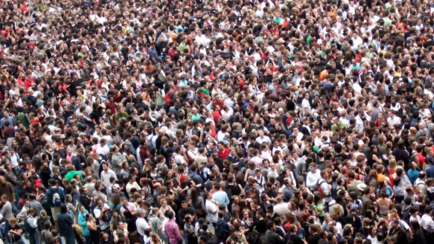
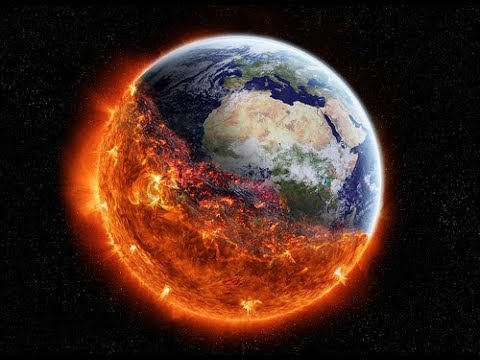
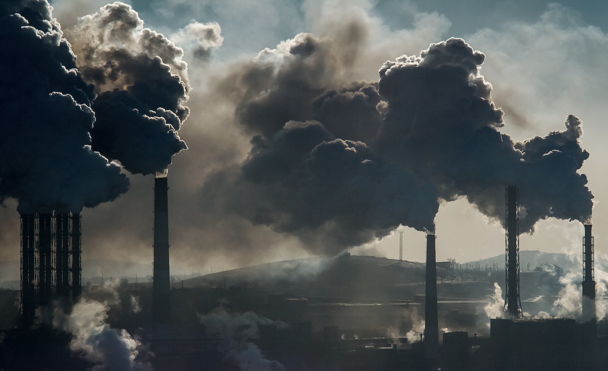

Przeludnienie

Przeludnienie jest problemem, który stopniowo staje się coraz groźniejszy i zauważalny. Mimo że z początku może wydawać się niczym przerażającym to pociąga za sobą katastrofalne skutki. Przykładem może być brak miejsc mieszkalnych, problemy z wystarczającą ilością wyżywienia oraz brak stanowisk pracy. Największym porblemem jest to, że przeludnienie jest niezwykle ciężkie do wyeliminowania.
Globalne ocieplenie

Globalne ocieplenie jest jednym z najbardziej znanych problemów na świecie, ponieważ stwarza ono niezwykle wielkie zagrożenie dla ludzkości. Stopniowe ocieplanie planety z początku może być niezauważalne, lecz z biegiem czasu robi się katastrofalne. Właśnie z tego powodu ludzie walczą z nim już od lat. Niestety narazie potrafimy je tylko spowolnić, więc zachęcamy do skupienia się na tym problemie. W ten sposób kiedyś uda nam sie je powstrzynać.
Masy plastiku
Masywna produkcja i użycie plastiku mają katastrofalny wpływ na naszą planetę. Plastik, który nie ulega biodegradacji, gromadzi się w środowisku i zanieczyszcza glebę, wody i atmosferę. Tonami plastiku trafiają do oceanów, powodując śmierć zwierząt morskich i skażając łańcuch pokarmowy. Aby zwalczyć ten problem, konieczne jest ograniczenie produkcji plastiku, zwiększenie recyklingu i promowanie alternatywnych materiałów biodegradowalnych. Wszyscy możemy przyczynić się do zmiany poprzez ograniczanie zużycia plastikowych opakowań, korzystanie z wielokrotnego użytku i edukację innych na temat świadomego zarządzania odpadami.
Zanieczyszczenie powietrza

Zanieczyszczenie powietrza ma szkodliwy wpływ na planetę, powodując negatywne skutki dla zdrowia ludzi, ekosystemów i klimatu. Emisja substancji szkodliwych, takich jak dwutlenek siarki, tlenki azotu i cząstki zawieszone, prowadzi do degradacji jakości powietrza. Aby zwalczyć zanieczyszczenie powietrza, konieczne jest ograniczenie emisji poprzez surowsze normy dla przemysłu i transportu, inwestycje w odnawialne źródła energii, promowanie elektromobilności oraz poprawa jakości paliw.